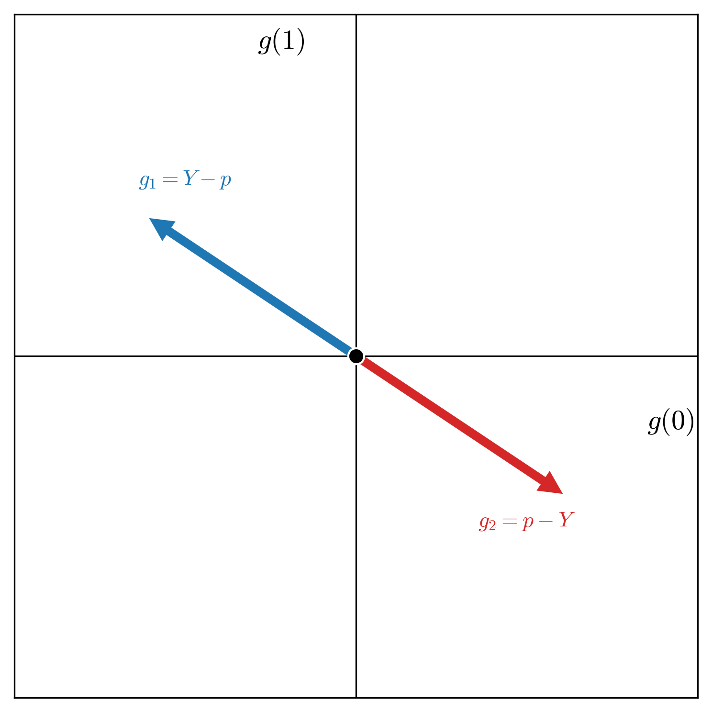
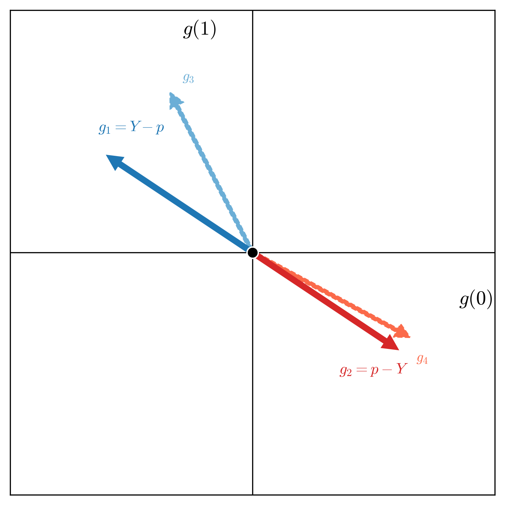
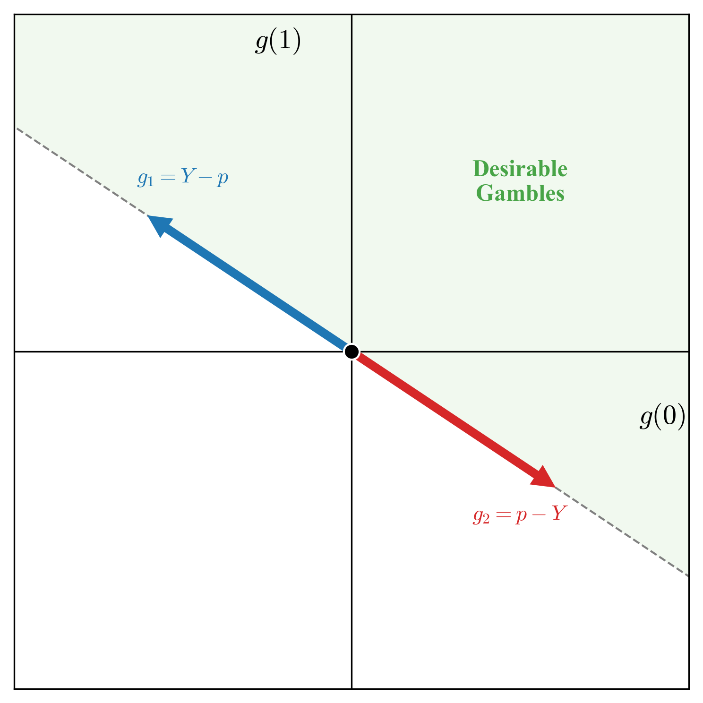

My confusion emerges from how do we mathematically operationalize reliability in the sense of uncertainty, because of course the goal is to define some measure as a signal of reliability. Now obviously, this is my own confusion (and one might have different way of thinking about these things, and also some justification for it), but I just came from a workshop on the Epistemic Intelligence in Machine Learning at EurIPS, and I believe believe everyone is equally confused with something. Or to say it differently, the whole business of thinking about uncertainty in machine learning is not so clear-cut: one is usually facing the very first hurdle of answering what does it mean to quantify uncertainty in machine learning? I don't think I can answer this question, but I'll do just enough work to put some my own confusion at ease.
A standard formalization of machine learning (which can also be extended to think of uncertainty quantification) is that there is some data-generating distribution, and the data is sampled from this distribution. And aleatoric uncertainty is
We can look up to learning theory to state it formally. We'll focus on the prediction task, i.e. we aim to find a function (a predictor) \(h: \mathcal{X} \rightarrow \{0,1\}\) that takes the input (or covariate) \(x\) living in some space \(\mathcal{X}\) and maps it the label \(y\) being either \(0\) or \(1\). Learning procedure starts with some empirical data of the form \(D = \{\left(x_i, y_i\right)\}_{i=1}^{N}\)[18], and considers a learner that takes this data (and something else which I'll say in the next paragraph), and comes up with the function \(h_{D}\) such that the following is holds, $$\begin{align} \begin{split} \mathbb{E}_{\mathcal{D}}\left[\mathbb{I}\{h_{D}\left(X\right) \neq Y\}\right] \leq \inf_{h \in \mathcal{H}}\mathbb{E}_{\mathcal{D}}\left[\mathbb{I}\{h\left(X\right) \neq Y\}\right] + \epsilon. \end{split} \end{align}$$ We've two objects in there that I've introduced before: the \(\mathcal{D}\) and \(\mathcal{H}\). As stated above, the goal of leaning is to take the empirical data \(D\) and design a predictor \(h_{D}\) such that it predicts well (or generalizes well), where generalization is measured as per the average loss \(\mathbb{I}\{h_{D}(X) \neq Y\}\) (how well the predictor matches the label associated with the covariate) for some new unseen covariate-label pair, where the idea of new-unseen pair is modeled as it being sampled from the distribution \(\mathcal{D}\). But this task of learner that only gets to see the empirical data and is expected to come up with a predictor that works well for new-unseen data is rather a big ask, and indeed learning theory has proved it to be impossible (à la the famous no free lunch theorems). An answer against this impossibility is the introduction of something called the hypothesis class \(\mathcal{H}\). A hypothesis class \(\mathcal{H}\) is a set of functions of the form \(h: \mathcal{X} \rightarrow \{0,1\}\), and it is also an input to the learning (along with the empirical data \(D\)) when it is tasked to come up with the predictor \(h_{D}\), i.e. the learner chooses \(h_{D}\) from \(\mathcal{H}\). Hence, the goal of the learner is now changed from the blanket generalization to generalization relativized to the hypothesis class \(\mathcal{H}\)—the learner is now competing against the best in-class function in \(\mathcal{H}\).
I've to offer some clarifications though: I'm not saying anything on the metaphysical existence of a distribution \(\mathcal{D}\), but the way I wrote it simply factors in as a formalization of the goal of generalization. One could, very well, define learning as estimating this distribution or some property of it, but one has to introduce another condition of realizability, i.e. the hypothesis class \(\mathcal{H}\) is properly specified. But this is a modeling assumption with no verifiability. I'll also add that there is contrasting positions on the goal of learning. When I asked this question to Ryan Martin (a statistician) in 2023, he argued that learning does not involve estimating the distribution to predict well, and to predict well one does not need to infer the distribution, and Gaël Varoquaux in 2025 offered predicting (or learning), to him, is same as learning the distribution, as an answer to this question. [19] I'd lean a little bit on the former side, however I'll agree I do not have a strong position of my own. But I do heavily believe on what learning theory offers us—\(D\) and \(\mathcal{H}\). And to think of uncertainty quantification in machine learning predictors, I reason we've to start with this primitive.
Thus, my goal in this note is to think of uncertainty quantification in machine learning starting with the primitive of the hypothesis class \(\mathcal{H}\) and the empirical data \(D\). And in order to do so, I'll first take a bit of detour and start talking about the theory of probability, and in particular, the subjective theory of probability (as studied by De Finetti, Ramsey, etc.), and we’ll come back to connect it back to machine learning, hoping to clarify some confusion what does quantifying uncertainty in machine learning will or should look like. My hope is that this detour does provide some needed clarification (at least to me).
Consider some forecaster who is tasked with making forecasts for some uncertain event \(Y \in \{0,1\}\). This could be like what is the chance of rain tomorrow, or what is the chance of the stock market collapsing the day after tomorrow. The forecaster will assign some number \(p \in [0,1]\) as a forecast probability for the event \(Y=1\). I'll, as of now, not focus on how the forecaster comes up such a number. In the machine learning context, that will be the focus of learning. Our main goal at this point would be talk about what does such an announced \(p\) means, and how do we evaluate it. This boils down to evaluating the forecaster. To make such evaluation, we'll have to give some meaning to the number \(p\). And as has been said before, I'll give the subjective interpretation, and more precisely, the betting interpretation to the number \(p\).
Given the uncertain outcome \(Y\) (whose value is yet to be materialized), a forecast \(p\) means the fair price for the uncertain outcome \(Y\), i.e. the forecaster as an act of making this forecast is signaling that they are indifferent between having \(Y\) or \(p\), where the value of \(Y\) is assumed to be in the same unit scale. Note that \(Y\) is a uncertain, and it can materialize to either \(0\) or \(1\), as in could lead to no gain, or can lead to a unit wealth of money. And the forecaster evaluates this uncertain outcome to be \(p\). Recalling that expectations are a fair price, then the evaluation of the uncertain outcome \(Y\) to be \(p\) follows from \(p \cdot 1 + (1-p)\cdot 0\) calculation. Informally, this betting interpretation argues that probability does not exist, but one is putting money on the table to signal the strength of the evidence the forecaster has towards the uncertain outcome \(Y\). A forecaster who strongly believes \(Y=1\) will occur, will assign high value (high \(p\)) for it. This is arguably the most ancient interpretation of probability, but has seen a resurgence recently in the framework of game-theoretic probability as pioneered by Glenn Shafer and Vladimir Vovk [1].
Having fixed the meaning we will take for the forecast \(p\) for the uncertain outcome \(Y \in \{0,1\}\), we can now start talking about the evaluation of such a forecaster. One common argument against such a subjective interpretation is: if the forecast is literally a personal belief / or a fair price, can it not be anything. To elaborate, a forecaster is signaling their subjective belief (or the personal fair price) as the forecast \(p\), and subjectivity implies that it can be anything, somewhat making the question of the evaluation rather ill-posed. However, the betting interpretation does provide protection by extending this framework to allow for two very natural agents in the setup: the Sceptic and the Nature. This extension takes the betting interpretation of the probability, and embeds it into a full-blown gambling game. I mentioned that the forecast \(p\) for the uncertain event \(Y\) means the fair price for \(Y\)—i.e. the forecaster is indifferent between selling \(Y\) to get the amount \(p\), or buying \(Y\) at the price of \(p\); the forecaster has no strong preference in either direction. Since this argument concerns with buying and selling, the full-flown gambling game can be setup as the Sceptic and the forecaster engaging in buying and selling of, something called gambles.
Given this uncertain outcome and the announced fair price, a gamble can be constructed as per some desirability constraint. Since the forecaster values the uncertain \(Y\) same as the announced price \(p\), a derived uncertain outcome \(Y - q, \ \ q \leq p\) is favorable to the forecaster. Similarly, \(r - Y, \ \ r \geq p\) is also favorable to the forecaster. A term that is used for such derived uncertain outcomes is desirable gambles. The interpretation under this full-blown gambling game is: the forecaster considers it desirable to buy the uncertain outcome \(Y\) at the price of \(q \leq p\) (and hence, \(Y-q\) is desirable). Similarly, the forecaster considers it desirable to sell \(Y\) for the price \(r \geq p\) (making \(r - Y\) desirable). We can put all the gambles of such types that the forecaster considers desirable in a set \(G\left(p\right):=\{Y - q, \ r - Y \ \mid q \leq p, \ r\geq p\}\), and in fact we can also visualize this set \(G\left(p\right)\)—the set of desirable gambles associated with the forecast \(p\) for the uncertain event \(Y\).



One sentence summary of what the forecaster is doing in this act of announcing the forecast \(p\) for the uncertain outcome \(Y\) is specifying all these gambles they consider desirable. Once this is clear, the agents Sceptic and Nature will do the rest of the work. What can the Sceptic actually do? The forecaster is specifying a set of desirable gambles, the Sceptic can simply start testing the forecaster on those gambles, i.e. the Sceptic can strategically offer the gambles the forecaster says are desirable to them, and if that leads to the guaranteed loss to the forecaster, we can say it is enough to cast doubt on the forecaster. Why? Because any sensible rational forecaster wouldn't call anything desirable if that can lead to the guaranteed loss to them.
In my opinion, this is a very simple and intuitive evaluation mechanism of the forecaster. But I'll argue it also gives an intuitive way of thinking about uncertainty in machine learning. I'll take a two-step route to make this argument; these two steps will involve two evaluation criteria of the subjective betting based interpretation of probability that I'm using: the internal consistency and the external consistency. I'll first argue that the notion of internal consistency relates to the common understanding of epistemic uncertainty, and external consistency can be related to aleatoric uncertainty. However, the argument I'll eventually make is that this distinction of epistemic and aleatoric is fundamentally confusing to the practice of machine learning, and terminology of the internal and external consistency clarifies the goal of uncertainty quantification in the practice of machine learning. I'll start with epistemic uncertainty.
In terms of origin, which is easy to guess, the word epistemic has its origin in the Greek word "epist{\={e}}mē" which translates to "knowledge." And hence, the phrase epistemic uncertainty becomes the uncertainty about the knowledge. But then what does it mean to be epistemically uncertain? We can try differently, and refer to the viewpoint that is more consensual: epistemic uncertainty has to do with the lack of knowledge, or to know that one does not know. But again, what does it mean to "not know?" I like to think that not knowing is the same as knowing what one does know. Or one's knowledge is the constraint that puts the limit to what one does not know. Hence, being epistemically uncertain about something could mean potentially mean different admissible possibilities that are consistent under the constraint of one's knowledge. This encapsulates, in my viewpoint, both the epistemic and the uncertain parts of the phrase epistemic uncertainty—knowledge is the constraint (epistemic) and uncertainty is different possibilities under this constraint (uncertainty).

This brings me to thinking about how to mathematically formalize epistemic uncertainty. I'll argue the distance based notion—the distance to the true data-generating process—can be ruled out as an operational formalization of epistemic uncertainty. By operational, I mean what is to be expected with quantifying uncertainty: we want to quantify uncertainty as it can be a useful proxy to enforce trust and reliability in machine learning predictions. And quantifying epistemic uncertainty can then signal the lack of knowledge—that one does not know. However, an agent that signals epistemic uncertainty via a distance to the truth metric is involved in a contradiction: quantifying the distance to a target requires knowing the target. And if the agent knows the target, rationality (or the logical behavior) dictates they should state it directly. I define epistemic uncertainty as the uncertainty (or indeterminacy) originating under the constraints of one's knowledge. Thus, if the agent has enough information to measure its distance to the truth, it is no longer constrained in a way that generates uncertainty. That does not make such distance measures uninteresting objects to study, but they can at-best quantify the sub-optimality gap. And my understanding is that it is not a sound reasoning that an agent can be self-aware of this sub-optimality gap, while also remaining uncertain in the operational sense defined above.
I believe here is also a nice opportunity for me briefly comment on bounded rationality and the distinction with epistemic uncertainty, as this has confused me (and I reason there is a tendency to conflate the two notions in talking about epistemic uncertainty in the machine learning context). While bounded rationality strictly means that (human) agents due to inherent limitations of limited data, cognitive load, and time constraints, do not optimally act as per the mechanisms defined in decision-theory when taking actions, instead they just take some favorable action. However, loosely I'll take that to mean that bounded rationality puts restrictions on an agent to compute (or calculate) the decision-theoretically optimal act. More loosely, consider the task of immediately asking some human to compute \(7931/47\), it is likely that the limits of cognitive scope and time would dictate that the human cannot give the exact answer to this calculation immediately. However, the computation is possible if given some time (and other resources like pen and paper, if required). Next consider asking the same human how would the human societies will look like \(300\) years from now? The distinction is clear: the first question is the case of boundedness, and the second case is of epistemic uncertainty. An agent when faced with the first question can give the approximate answer, and hence can also loosely define some error metric (e.g. distance to the ground truth), while it is not possible for the agent to be self-aware of any such notion in the case of second question. They are epistemically uncertain, and the answer depends on the constraints of the current conditioning of the human. In this sense, I'd argue that the distance notion remains a valid conceptual metric under the boundedness setting. However, as argued above, it is fundamentally inaccessible—and thus not operational—for a true epistemically uncertain agent.
Another popular way of quantifying epistemic uncertainty is through some second-order distribution, with the goal that it covers the ground truth. I think the argument above also would render this way of quantifying epistemic uncertainty non-operational. So how do we quantify epistemic uncertainty then? I'd reason (and it follows from the discussion above) that epistemic uncertainty is not an uncertainty quantification problem, it is an uncertainty representation problem. When faced with the question of how'd the human societies would look like \(300\) years from now, we want to allow the agent to represent a full spectrum of the possibilities as originating from the constraints of their knowledge. And the work we have done with the betting based gambling setup would now reveal that the classical probability theory is fundamentally incapable of doing that.
Going back to the setup: the forecaster in the act of announcing their fair price for the uncertain outcome \(Y\) is also announcing their set of desirable gambles—the gambles they will like to have. This setups a marketplace of sorts. The Sceptic’s role is to challenge the forecaster, and to make profit for themselves. The argument is simple: if the Sceptic is able to exploit the forecaster, then the forecaster's announced fair price is not good—or the forecaster lacks knowledge. Since the forecaster is signaling some set of desirable gambles, and the Sceptic is able to construe a way to offer gambles to the forecaster that surely make the forecaster to lose money, then clearly the forecaster has no knowledge. Next we'll consider an epistemically uncertain forecaster—the forecaster whose constraints of their current knowledge allows to specify two admissible prices for the uncertain outcome \(Y\), and we can study the condition of coherence stated next.
Consider for the uncertain outcome \(Y \in \{0,1\}\), the forecaster announces two different fair prices \(p_1\) and \(p_2\) with \(p_1 \neq p_2\). What would such a thing mean? It could mean many things, but as stated above, this is a situation an epistemically uncertain agent can find themselves in. Note however that when I defined epistemic uncertainty, I did not comment on the irreducible or the reducible distinction is is common in the literature. Broadly, epistemic uncertainty is taken to the uncertainty due to the lack of knowledge, and it can be reduced by accumulating more knowledge. My position is that any uncertainty in the practical machine learning scenario is due to lack of knowledge, and can be reduced by accumulating more knowledge (of suitable kind). So the common definition of epistemic uncertainty is not very useful. My definition uncertainty (or indeterminacy) about something as originated under the constraints put by one's current knowledge, does not make distinction between reducible or irreducible, but allows differing possible assignment of the fair prices \(p_1\) and \(p_2\) to the uncertain outcome \(Y\). The uncertainty about how the human society will look like in \(300\) years is fundamentally reducible, but it is practically irreducible. But we can all agree that this level of distinction is fundamentally confusing. And hence, I'd reason that internal consistency (or coherence) can better categorize the notion of epistemic uncertainty.
I haven't yet formally define coherence, but I've argued that epistemic uncertainty can manifest as the constraints of one's current knowledge allowing one to specify two prices for the uncertain outcome \(Y\). This is how one would answer the question of how the human society will look like in \(300\) years—speculating based on the constraints of one's current knowledge. The answer is practically indeterminate, and hence a sane person would give ideally few possibilities as an answer to this question. It is very much possible that a person who'd very confidently give a single answer—a singular position of how the human society will look like—will be frowned upon, or runs into the risk of being labeled as arrogant. But I'll call internal inconsistency as the situation where one is unable to specify a singular assignment to the uncertain outcome \(Y\) as the fair price, and I've argued this is a reasonable manifestation of an epistemically uncertain agent. But I hinted before, that classical probability theory would not incentivize this epistemically uncertain agent to faithfully represent their inconsistency, as now this agent will be "Dutch booked" in the marketplace as argued next.
Consider the uncertain event \(Y \in \{0,1\}\), and assume the forecaster assigns two fair prices to the event \(Y=1\) as \(p_1\) and \(p_2\), with \(p_1 < p_2\). What does this mean in our marketplace? By announcing \(p_1\), the forecaster is signalling that they are willing to sell the uncertain outcome \(Y\) for \(p_1\) (or rather, they are indifferent to it, so they should accept it). By announcing \(p_2\), they are signalling they are willing to buy \(Y\) for \(p_2\). Enter the Sceptic. Seeing these two prices, the Sceptic doesn't need to know anything about \(Y\)—whether it will rain or not is irrelevant. The Sceptic simply takes the forecaster up on both offers: buying \(Y\) from the forecaster at the low price \(p_1\), and selling \(Y\) back to the forecaster at the high price \(p_2\). Let's tally the books. The forecaster has sold \(Y\) and bought \(Y\), so their net holding of the uncertain outcome is zero (\(Y - Y = 0\)). However, in doing so, they received \(p_1\) but paid out \(p_2\). Since \(p_1 < p_2\), the forecaster has made a guaranteed cash loss of \(p_1 - p_2\). This is a sure loss. The actual outcome of \(Y\) doesn't even enter the equation. The forecaster has been "Dutch booked" purely due to their own internal inconsistency. Dutch book is an argument that is used to justify the regular axioms of probability under the subjective or the betting interpretation of probability. I'll not go into much detail here (one can refer to [17] to learn more), but the main argument is that any forecaster who cannot synthesize their own inner state into a consistent belief will be prone to guaranteed sure loss by the Sceptic. And being able to avoid such ruin boils down to following the axioms of probability.
So what is the message here? The way I see the message is that the epistemically uncertain or internally incoherent agent is facing an economic vulnerability in the marketplace we set up under the betting interpretation of probability. Such an agent will be exploited by even an uninformed Sceptic who can just take this agent on their two inconsistent prices. A way out is to pick a single price (or equivalently, put efforts to resolve the epistemic uncertainty or hide it). In summary, under the classical laws of probability theory, epistemic uncertainty is an objective flaw that must be resolved; it does not incentivize the agent to faithfully represent it.
As per learning theory, the goal of the learner is start with the data \(D\) and the hypothesis class \(\mathcal{H}\) and pick a function \(h \in \mathcal{H}\) that leads to better generalization. Thus, the hypothesis class \(\mathcal{H}\) is the forecaster, whose epistemic state is being constrained by the empirical data \(D\). And the regular Bayesian inference comes very close in incorporating this.
Assuming each \(h \in \mathcal{H}\) is parameterized by some parameter \(\theta \in \Theta\), learning in the sense of Bayesian inference can be formalized as computing the posterior distribution over parameters: $$p(\theta \mid D) \propto p(D \mid \theta) \cdot p(\theta),$$ where \(p(D \mid \theta)\) is the likelihood of observing the data under parameter \(\theta\), and \(p(\theta)\) is the prior. Given a new input \(x\), the predictive distribution for the label \(y\) is obtained by marginalizing over the posterior: $$p(y \mid x, D) = \int p(y \mid x, \theta) \cdot p(\theta \mid D) \, d\theta.$$ This is nice. The posterior \(p(\theta \mid D)\) captures the uncertainty about which parameter (or equivalently, which hypothesis \(h_\theta\)) is correct given the data. If the posterior is concentrated around a single \(\theta^*\), the system is confident. If it is spread out, the system is uncertain—different plausible models disagree.
This Bayesian view aligns naturally incorporates the notion of epistemic uncertainty we saw before—the resulting posterior \(p\left(\theta \mid D\right)\) denotes the forecaster's internal state: it mathematically represents the hypotheses the forecaster considers plausible given \(D\). A spread-out posterior means the forecaster cannot commit to a single fair price (internal inconsistency), or to say it again, the dataset \(D\) hasn't constrained the forecaster enough. However, the predictive distribution \(p\left(y \mid x, D\right)\) is where this framework falls short in the faithful representation of the epistemic state of the forecaster \(\mathcal{H}\). As argued before, internal inconsistency is economically exploitable, and hence the forecaster in this framework is averaging out their internal uncertainty to give a precise forecast \(p\left(y \mid x, D\right)\). As far as I can see, this compresses information and does not faithfully represent the epistemic state of the forecaster.
One counter argument someone made to my reasoning goes like this: say an agent becomes internally consistent, or assigns a single fair price to the uncertain outcome \(Y\), that is not sufficient to render this forecaster as reliable or trustworthy. I've emphasized those words, as it is not clear yet what they mean. If we intend to mean reliability and trustworthy in the sense of if we ask this forecaster again and again for their fair price for the uncertain outcome \(Y\), avoiding economic exploitation would make this forecaster reliable and trustworthy as they will have to assign a single consistent number as the fair price. And if reliable and trustworthy is used in the sense of if it says something about the world: how much veracity the forecaster's assigned fair price holds in the real world, then I'd argue that internal consistency is not claiming to define that. With this reasoning, I'll make an argument that reliable and trustworthy are vague words, once we've fixed the internal consistency, we have to go to something called external consistency. And hence, the game is still on.
We have ruled out incoherence for the forecaster at this point. So given the uncertain outcome \(Y \in \{0,1\}\), now the forecaster is stating \(p\) as the forecast for the event \(Y=1\). Continuing with the betting interpretation, the forecaster is specifying the fair price for the uncertain outcome \(Y\), and hence as a result is stating the set of gambles desirable to the forecaster, as \(G\left(p\right) := \{Y - q, \ \ r - Y \ \ \mid q\leq p, \ r\geq p\}\). As visualised above, this set forms a convex cone, and consequently we can construct the set of gambles undesirable to the forecaster as \(G'(p) :=\{-\left(Y - q\right), \ \ -\left(r - Y\right) \ \ \mid q\leq p, \ r\geq p\}\)—these are the gambles that the forecaster wants the Sceptic to have. We can think the set \(G'(p)\) as the set of gambles made available by the forecaster to the Sceptic. By making the forecast, and assuming the betting interpretation of the probability, these are the set of gambles available to the Sceptic. So what does Sceptic do? A Sceptic starts with some unit wealth, and strategically starts putting some proportion of their money on these gambles. For instance, given some gamble \(G\) of the form as in the set of available gambles, the Sceptic will stake \(\lambda\) of their wealth for \(G\), hoping to have \(1 + \lambda \cdot G\) as the end wealth as a result of this transaction. But the Sceptic would not stop at just one round, they will continuously choose strategic stakes to have the accumulated wealth after, say \(t\) rounds as
\(\quad \quad \quad W_t = \prod_{i=1}^{t}\left(1 \ + \ \lambda_i\cdot G\right), \ G \in \{-\left(Y-q\right), \ -\left(r-Y\right) \ \vert \ q\leq p, \ r \geq p\}\)
The Sceptic will now engage in the betting game with the forecaster, i.e. the Sceptic will literally buy or sell the gambles the forecaster will make available. We have another agent in the game now, the Nature, and after each round, the agent Nature reveals the realised value of \(Y\). Note that the forecaster is independent of Nature, and has no bearing whatsoever with how the Nature behaves. However, the forecaster claims to have some information about how the Nature may behave. The Sceptic is trying to test this claim, by actually making use of the announced forecasts.
A standard argument (which I won’t go much into details) would say that \(W_t\) process is a super-martingale (as per the forecaster) which means that \(\mathbb{E}\left[\ W_t \ \mid \ \mathcal{F}_{t-1} \ \right] \leq W_{t-1}\), where one can think \(\mathcal{F}_{t-1}\) as encapsulating all the knowledge before the nature reveals \(Y_t\) at round \(t\). As per the forecaster means, that this is what this agent is getting into by the very act of making forecasts and by providing a set of available gambles, i.e. this agent thinks the Sceptic will not be able to make money. And the whole setup now reveals that if the Sceptic does indeed ends up making unbounded money, then the forecaster has no clue whatsoever on the behaviour of the Nature. Informally, the forecaster sets up the game, and decide the rules of the game, and if the Sceptic (who has everything against them the way the game is setup) ends up winning (making money) in this rigged game, then the forecaster is not making very good forecasts. This is a very standard argument, and has laid the groundwork for what is now a rather popular framework of testing by betting [2]. In the setup described above, we can look at Sceptic at bit closely. In the game that is rigged, a Sceptic is trying to get ahead by strategically choosing \(\lambda\) at each time step, and to be able to do so the Sceptic is allowed to use any information that does not depend on the future, i.e. before the nature reveals the uncertain \(Y\). It is easy to see that if the Sceptic has more information, or is able to design an informative mechanism to be able to foresee the future better than the forecast, the forecaster can be defeated in their own game.

I like this sentence by Paul Vitányi in his very nice overview of the notion of randomness [3]: "describing `randomness' in terms of `unpredictability' is problematic and possibly unsatisfactory." At the risk of digressing a bit, I'll give a brief informal overview of the program of studying randomness via unpredictability. This program was initiated by Richard Von Mises as an attempt to justify the application of an axiomatic and abstract theory of probability to real-life. The question is given an infinite sequence of \(0\) and \(1\) as \(01001001000111010101\ldots\), when can we say if this sequence is truly random (or generated by some random source) or not. To think of this as an outcome sequence of some coin with heads rate \(p\), Von Mises notion was based on the 'Law of Excluded Gambling Strategy,' i.e. no gambler betting in fixed amounts on the flips of a coin cannot make more money in the long run by betting randomly (as in with no strategy) than betting with some strategy in mind. Here, strategy is defined by some selection rule that looks at past and strategically decides whether to bet on the next coin flip or not. This notion quickly went into problems as it was not clear what selection rules are admissible, and the resolution came from the notion of computability, i.e. there should not exist any computable strategy or system that can make the gambler make money. It that happens, the sequence can be deemed non-random. Subsequent notions of randomness make this more tangible by allowing for not when to bet but also how much to bet, and if any martingale process can make unbounded money on the outcome sequence, then the sequence will be deemed non-random. However, we do not have a good mechanism to test if something is truly random.
Randomness and forecasts are two sides of the same coin, and the betting interpretation is a unified way of studying both. To summarize, the forecaster announces the forecast, and as a result makes available the set of gambles to the Sceptic. The Sceptic uses their own information before the nature reveals the uncertain outcome \(Y\), to get ahead of the forecaster. A forecaster is trying to match the randomness of the Nature, and if the Sceptic is able to devise an intelligent mechanism, then the forecaster can be falsified. There are no universally good forecasts—a forecast is good only subjected to the information the Sceptic (or the evaluator in general has). And hence, the Popperian falsifiability [4] shines again: randomness and forecasts are based on falsification, and not verification. One can run sophisticated tests to try to falsify forecasts, but one cannot claim if the forecasts are truly good. And the falsification strategy depends on the information or the extent of sophistication (compute, etc.) the Sceptic (or evaluator) has.
Cynthia Dwork et al. [5] operationalize this via their now celebrated framework of outcome indistinguishability that is now widely known. The framework assumes a forecaster and computational form of tests, which they call distinguishers, and a forecaster will be called outcome indistinguishable from the nature, if no distinguisher can falsify the forecaster based on the observational data that is coming from nature. However, the framework assumes that the distinguisher is also operating under the same information access as the forecaster. In the machine learning predictor scenario, when we’re designing algorithms for some high-dimensional objects like people, we have some representation in the form of what we call a covariate \(x\), and the predictor gives the forecast for some outcome, like the chance of defaulting a loan, or some welfare program access like housing. It is clear that we’d need some evaluation mechanism on such a predictor to be able to rely on the predictions, and clearly outcome indistinguishability offers one—any predictor is good with respect to some set of distinguishers if it cannot be falsified any distinguishers from the set. And the popular notion of multi-calibration [6] follows from it.
To make this concrete, let's look at a simple simulation. Imagine a forecaster who announces a constant probability of \(0.5\) for rain every day. If it rains \(50\%\) of the days on average, a Sceptic who knows nothing else cannot exploit this forecaster. Any strategy they try–betting on rain, betting against it, or some random mix—will result in their wealth fluctuating around their initial capital (a martingale), but never consistently growing. To this uninformed observer, the forecaster looks perfectly calibrated. The forecaster is externally consistent relative to this Sceptic.
Next, we can introduce a second Sceptic who knows the season. Suppose in Summer it rains \(80\%\) of the time, and in Winter only \(20\%\). This informed Sceptic looks at the \(0.5\) price and sees a goldmine. In Summer, they buy rain (paying \(0.5\) for something worth \(0.8\)), and in Winter they sell rain (selling at \(0.5\) something worth \(0.2\)). As the red line in Figure above shows, their wealth grows exponentially. The forecaster hasn't changed, and the sequence of outcomes hasn't changed. All that changed is the information available to the Sceptic. This validates the relativistic view: one cannot say a model is "calibrated" in a vacuum; one can only say it is calibrated with respect to a set of tests or features.
I've argued that epistemic uncertainty or internal inconsistency is a representation problem, and the Bayesian framework comes very close in capturing some notion of the epistemic state of the forecaster. And while I've hinted at a better representation of the resulting internal inconsistency (as averaging collapses information), we can now think of what we can do with it. We want to quantify (or represent) epistemic uncertainty as a way to signal "the forecaster does not know," and hence the hope is it'll help foster trust in the forecaster. Such signal can be of crucial importance for task of out-of-distribution (OOD) detection, i.e. when the model is exposed to samples that are unlike what it has been trained for. A standard example could be that of a model trained to MNIST dataset being exposed to the samples from FashionMNIST, clearly we'd want the model to signal something like it hasn't seen these images before, instead of wrongly classifying them into one of the possible digits. This is one case of trustworthiness or reliability that is clearly desirable, and representing epistemic uncertainty arguably should provide such reliability or trustworthiness?
The answer is both yes and no, and the distinction is crucial. Epistemic uncertainty, as I've defined it (internal inconsistency or disagreement among hypotheses in \(\mathcal{H}\) given data \(D\)), is sufficient but not necessary for signaling untrustworthiness. If the posterior \(p(\theta \mid D)\) is spread out—meaning different models in \(\mathcal{H}\) make conflicting predictions—this is indeed a signal that the forecaster lacks grounding. The data \(D\) has not constrained the hypothesis class \(\mathcal{H}\) enough, and gathering more data could resolve the disagreement.
However, the converse does not hold. If the posterior is concentrated—meaning all plausible hypotheses in \(\mathcal{H}\) agree—it does not follow that the forecaster is trustworthy. Consider again the MNIST to FashionMNIST example. Suppose we train an ensemble of neural networks on MNIST. When we test on a shirt from FashionMNIST, all models in the ensemble might confidently agree: "this is a 3" (low epistemic uncertainty, low posterior variance). But this agreement is meaningless—the models are all wrong. The issue is not that the data hasn't constrained \(\mathcal{H}\) (it has; all models agree). The issue is that \(\mathcal{H}\) itself is inadequate. The hypothesis class was designed to distinguish digits, not clothing.
This reasoning leads to an important conclusion: while having epistemic uncertainty (internal disagreement) is a clear signal that one needs more data or a better constrained \(\mathcal{H}\), the absence of epistemic uncertainty does not mean one can stop worrying. A model with zero epistemic uncertainty can still be dangerously overconfident if \(\mathcal{H}\) is mis-specified. And herein lies the limitation of focusing solely on epistemic uncertainty for reliability: it tells you when the forecaster is internally confused, but not when the forecaster's entire worldview (the hypothesis class) is wrong. For that, we need external consistency—calibration relative to a Sceptic who has information beyond what \(\mathcal{H}\) can see.

This reasoning is not new, but is extremely rare. I can recall two papers [7][8] that realize the fundamental limitations of epistemic uncertainty towards what it is usually intended for, as a signal of that you don't know (or OOD detection). However, that does not obviously mean that we should not work on faithful representation of the internal (in)consistency of the hypothesis class. But in the context of machine learning, epistemic uncertainty can at-best be associated with the task of active learning. If the data is not constraining the hypothesis well, we need to collect more data. Once we have sufficiently resolved the epistemic uncertainty (or the internal inconsistency), we can move on to external consistency.
External consistency (or calibration) is about the forecaster not being exploitable by the Sceptic who can strategically bet against the forecaster in correspondence with the Nature. And this is all relative to the information the Sceptic has. As an example, consider the hypothesis class of all constant functions. One can easily pick any constant function from the hypothesis class to satisfy internal consistency. However, which one is the correct one? The condition of external consistency mandates the function that predicts the marginal rate of outcome \(Y\) is the correct one. Thus, once the internal inconsistency has been taken care of, external consistency checks whether the the hypothesis class is externally consistent at the right place. However, that heavily depends on the information access and the computational access of the Sceptic. As per Figure above, I like to see that a Sceptic who is also looking at the world from the perspective of the hypothesis class, an externally consistent forecaster (or hypothesis) is non-exploitable. However, once the Sceptic moves beyond it, which means that the Sceptic has much better or distinguishing hypothesis class or has extra information that the forecaster is not making use of, then the same forecaster (Sceptic) is vulnerable to exploitation. And hence, to the question of what is external consistency good for, my answer is that external consistency is making the most and correct usage of one's hypothesis class. However, as with the internal consistency, this is again not a panacea.
Having written it down, I'm left with many questions than I've the time to answer those yet. But one major question is what could be the asymptotics of learning from data? This means where this will all end. Deep learning presents itself as a very clear evidence of the arguments I've made in this note. Based on the rigorous empirical benchmarking and scaling, the community has come very far. It does not look to me that the benchmarking and scaling has anything to do with approximating the "true" data generating distribution, and yet building a benchmark to find the issue (Sceptic) and then chasing the benchmark has brought us far along that there is actual theoretical and empirical studies on the emergent external consistency [9][10][11][12] out of the box. But is it good or bad, is something that I do not have the answer to? As argued before, being exploited by the Sceptic certainly falsifies the forecaster (or the model), but failing of any exploitation does not deem the forecaster to be good. It could be good, or the Sceptic is weak. Given the amount of computation and data the current models are operating under, I'm anxious of the latter. This certainly means we need to build stronger and stronger benchmarks, but at this scale of computation and data, complexity theory and the theory of randomness can put a hard limit. I'll end with a rough sketch[20] of how I think of the forecaster in the compression viewpoint [13][14]—one theory to explain deep learning that I think goes quite far in explaining it.
Representation learning is the major force behind how neural networks succeed. The idea is that the model \(h\) does not directly map from the input space \(\mathcal{X}\) to a probability. Instead, it first maps the input to some latent representation space \(\mathcal{Z}\), and then maps this representation to a prediction. We can write this as \(h = f \circ \phi\), where \(\phi: \mathcal{X} \rightarrow \mathcal{Z}\) is the representation function, and \(f: \mathcal{Z} \rightarrow [0,1]\) is the prediction head. Roughly, the representation \(\phi\) could be thought of as a form of compression. It takes potentially high-dimensional, complex inputs and maps them to a (hopefully) more manageable latent space. And if two different inputs \(x\) and \(x'\) get mapped to the same region in this latent space (i.e., \(\phi(x) \approx \phi(x')\)), then they become indistinguishable to the model. The model cannot tell them apart. And if these inputs have different labels in the training data, the model has no choice but to output a probabilistic prediction that reflects this ambiguity. Thus, the probabilistic predictions of a model are not statements about some true underlying randomness. They are artifacts of the model's representation, the resolution at which it can distinguish between different inputs. And clearly, if one uses a richer hypothesis class \(\mathcal{H}'\) (say, a deeper network with more parameters), we can learn a finer-grained representation \(\phi'\) that resolves distinctions that were previously invisible. The model's predictions become more refined. But obviously there is a limit to how much structure can be extracted. What remains incompressible is, in some sense, the "randomness" in the data. This connection between compression and randomness is not accidental, and will lead us to a deeper understanding of the limits of external consistency.
There is a deep connection in learning theory between learnability and compression [15]. Roughly, a hypothesis class \(\mathcal{H}\) is learnable if and only if it admits a compression scheme. The intuition is simple: if we can compress the data using hypotheses from \(\mathcal{H}\), we have found structure or patterns. What cannot be compressed is noise, the irreducible randomness. This is formalized in the theory of Kolmogorov complexity, which defines the complexity \(K(x)\) of a string \(x\) as the length of the shortest program that outputs \(x\). A highly compressible string has low Kolmogorov complexity (lots of structure), while a random string has high complexity (no structure to exploit). When we train a neural network, we are essentially searching for a compressed representation that captures the patterns in the data while discarding the noise. The probabilistic predictions arise precisely at the boundary, where the representation cannot distinguish further, what remains looks random to the model.
Now recall our framework of external consistency. A forecaster is externally consistent if a Sceptic, betting strategically, cannot accumulate unbounded wealth. The Sceptic observes the forecaster's predictions and the realized outcomes from Nature, and tries to exploit any systematic deviations. If the forecaster's predictions truly match the "randomness" in Nature's outcomes, no betting strategy can succeed in the long run. This is precisely the classical notion of randomness via unpredictability: a sequence is random if no gambler can make money betting on it. Von Mises formalized this as the "Law of Excluded Gambling Strategy," and it was later refined using computability theory, a sequence is random if no computable betting strategy can exploit it.
We can now see the Sceptic in our framework as performing a statistical test for randomness. When the Sceptic bets against the forecaster, they are testing whether the sequence of outcomes, given the forecaster's predictions, exhibits exploitable patterns. If the Sceptic's wealth grows unboundedly, they have found a pattern, the sequence is not random relative to the forecaster's claims. If all Sceptics fail to profit, the forecaster is externally consistent, the outcomes appear random relative to the forecaster's information. This connects external consistency (calibration) to the notion of matching the randomness in Nature. A calibrated forecaster is one whose predictions render Nature's outcomes unpredictable, random from the perspective of any betting strategy the Sceptic might employ.
However, a crucial subtlety arises here, one that connects to the theory of computational complexity. In the definitions above, we have been implicitly assuming the Sceptic has unbounded computational resources. But what if the Sceptic is computationally bounded? What if they can only run efficient algorithms, say polynomial-time computations? This restriction fundamentally changes what we can verify.
As per cryptography and complexity theory, there exist sequences that are not truly random, yet appear random to any efficient observer. These are called pseudorandom sequences, and are obviously the backbone of the cryptography business. A pseudorandom generator is a deterministic algorithm that takes a short random seed (say, \(k\) bits) and stretches it into a much longer string (say, \(n \gg k\) bits). The output is completely determined by the seed, so it has low Kolmogorov complexity, it is not truly random. However, if we assume certain computational hardness (e.g., that some problems are hard for polynomial-time algorithms), then no efficient algorithm can distinguish the output of the pseudorandom generator from a truly random string [16]. The sequence looks random to any computationally bounded observer, even though it is not.
Why does this matter? Because it reveals a fundamental gap between two notions of randomness: information-theoretic randomness (high Kolmogorov complexity, truly unpredictable) and computational randomness (indistinguishable from random by efficient tests). A pseudorandom sequence is not information-theoretically random, but it is computationally random. Crucially, this means that passing all efficient randomness tests does not guarantee true randomness. A deterministic, structured sequence can fool all efficient observers. There is no efficient test that can falsify pseudorandomness, not because the sequence is random, but because the test is not powerful enough.
We can now apply this insight to our framework of external consistency. I'll distinguish two notions of calibration. A forecaster is information-theoretically externally consistent (or IT-calibrated) if no Sceptic, even with unbounded computation, can accumulate unbounded wealth. A forecaster is computationally externally consistent (or computationally calibrated) if no efficient Sceptic (say, polynomial-time) can accumulate unbounded wealth. By analogy with pseudorandomness, we can envision a scenario where a learning algorithm is computationally calibrated but not information-theoretically calibrated. That is, the model passes all efficient calibration tests (all feasible benchmarks), yet there exists an inefficient Sceptic who could exploit it. The model is pseudocalibrated, it fools our tests not because it truly matches Nature's randomness, but because our tests are computationally bounded. This is not a failure of the model per se, it is a fundamental barrier imposed by computational complexity. If P \(\neq\) NP (or similar hardness assumptions hold), then there will always be a gap between what we can verify efficiently and what is true information-theoretically.
This verbalizes my earlier anxiety, and my question on the asymptotics of learning from data. As is already evidenced from the commercial large language models, I'm leaning to believe that the lack of verifiability is the endgame. Modern models are trained on vast datasets and pass increasingly sophisticated benchmarks. They appear well-calibrated. But are they truly calibrated, or are they merely pseudocalibrated, exploiting the computational limits of our evaluation methods? The success of deep learning might be evidence of the former, or it might be evidence that we are operating in a regime where the gap between computational and information-theoretic properties matters. We build benchmarks (Sceptics), models chase them, and we observe emergent calibration. But as with pseudorandom generators, passing all known tests does not guarantee the underlying property holds. It could simply mean our Sceptics are not powerful enough. And if computational complexity theory is any guide, there may be fundamental limits to how powerful we can make them. This is the relativistic view taken to its logical extreme: not only is calibration relative to the information the Sceptic has, but also to the computational resources the Sceptic can deploy. And unlike information, which can in principle be acquired, computational limits may be insurmountable [21].